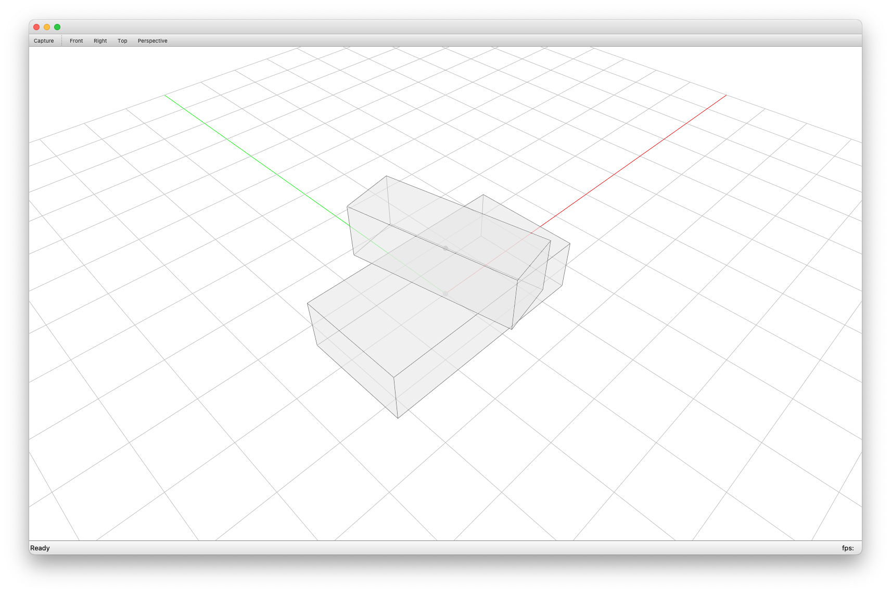
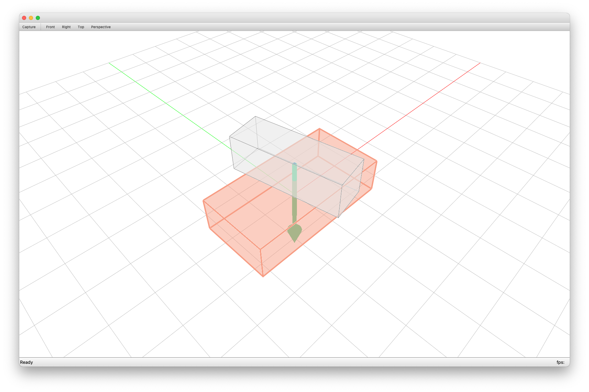
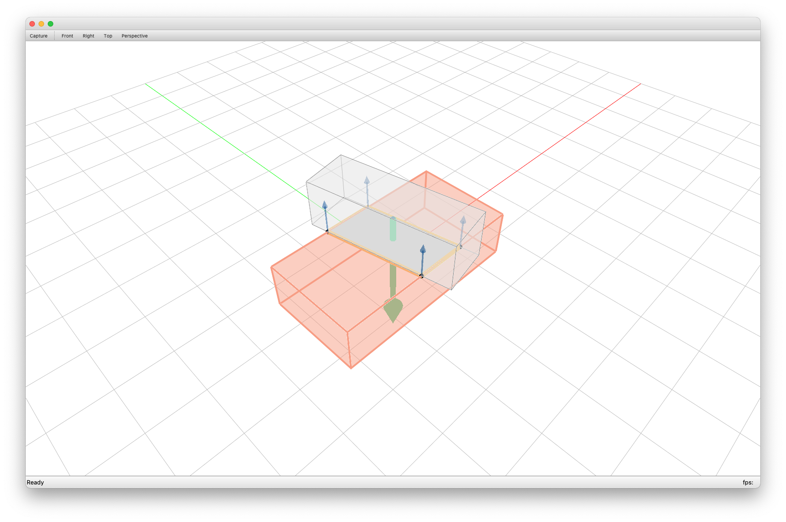
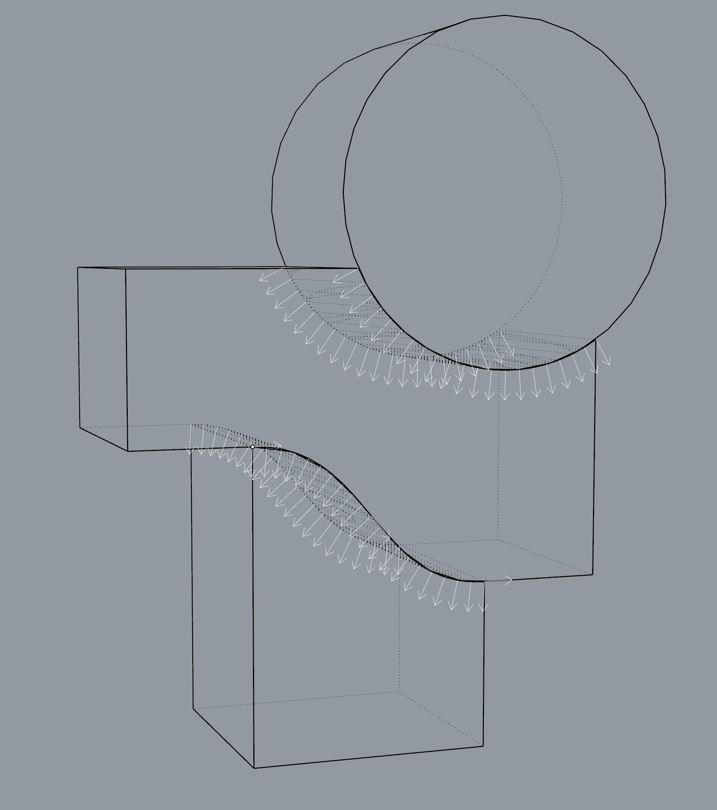
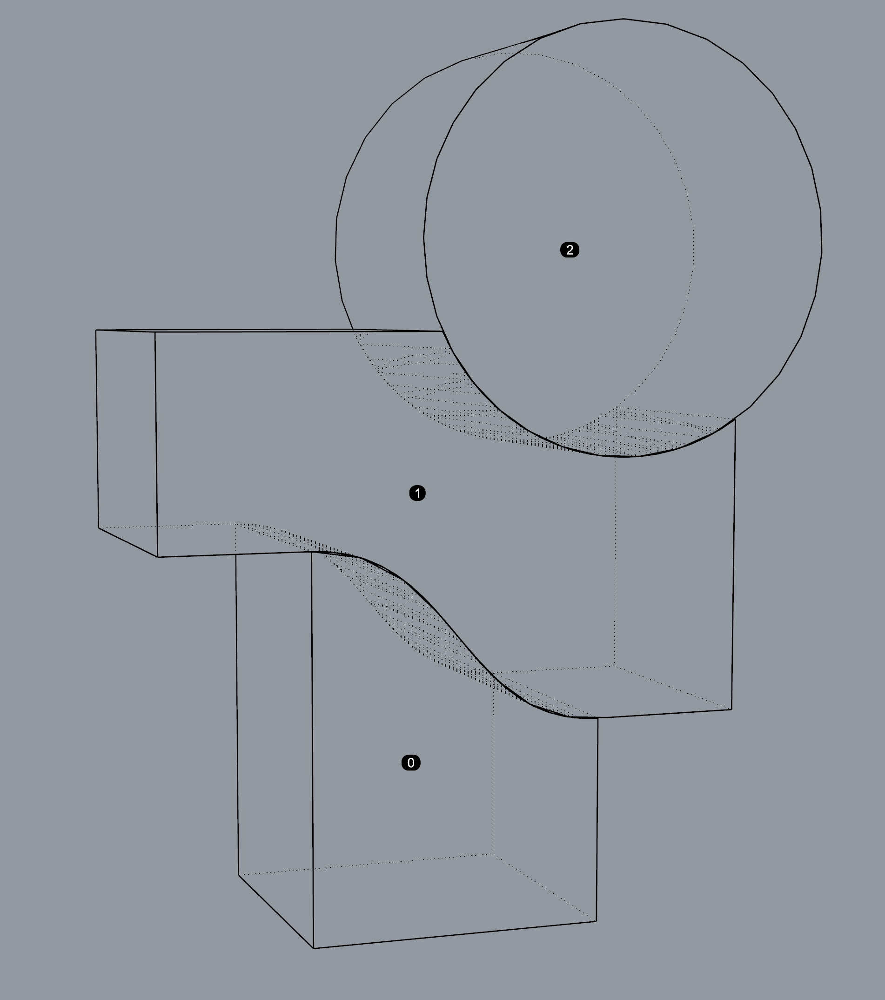

Tutorial¤
How to use CRA for your analysis¤
1. Creating geometries¤
We create two blocks: one as support and another one as free block.
from compas.geometry import Box, Frame, Translation
support = Box(Frame.worldXY(), 4, 2, 1) # supporting block
free1 = Box(
Frame.worldXY().transformed(
Translation.from_vector([0, 0, 1])
* Rotation.from_axis_and_angle([0, 0, 1], 0.2)
), 1, 3, 1
) # block to analyse
2. CRA Assembly data structure¤
Add them to assembly data structure.
from compas_assembly.datastructures import Block
from compas_cra.datastructures import CRA_Assembly
assembly = CRA_Assembly()
assembly.add_block(Block.from_shape(support), node=0)
assembly.add_block(Block.from_shape(free1), node=1)

3. Boundary conditions¤
Set boundary conditions.

4. Identifying interfaces¤
Then we identify planar interfaces between blocks automatically.
5. Solving equilibrium¤
compas_cra provides three solvers:
- RBE Solve:
compas_cra.equilibrium.rbe_solve. - CRA Solve:
compas_cra.equilibrium.cra_solve. - CRA Penalty Solve:
compas_cra.equilibrium.cra_penalty_solve.
6. Visualisation¤

The complete tutorial script can be downloaded from scripts/tutorial_cubes.py.
To reproduce our paper's examples or to see more how to construct assembly and solve equilibrium, please check the Examples.
Optional: Export geometry from CAD software (Rhino)¤
For the step Creating geometries, we can also input geometry from CAD software. Here we use Rhino as an example.
Export mesh blocks as Assembly json file¤
Use this script at scripts/mesh_to_assembly_json.py
to select Rhino mesh blocks and export to assembly data structure as a .json file.
"""This is the script to add assembly without interfaces from rhino meshes"""
import os
import compas
import rhinoscriptsyntax as rs
from compas_rhino import select_meshes
from compas_cra.datastructures import CRA_Assembly
HERE = os.path.abspath(os.path.dirname(__file__))
PATH = os.path.abspath(
os.path.join(HERE, "..", "data")
) # or change to your own directory
guid = select_meshes()
assembly = CRA_Assembly()
assembly.add_blocks_from_rhinomeshes(guid)
filename = rs.GetString("file name (xxx.json):")
file_o = os.path.join(PATH, filename)
compas.json_dump(assembly, file_o)
print("file save to: ", file_o)
Note
The selection sequence is important because it represents the node indices.
Then we can load the .json file from local path.
import os
import compas
import compas_cra
from compas_cra.datastructures import CRA_Assembly
FILE_I = os.path.join(compas_cra.DATA, "XXX.json") # or your own path
assembly = compas.json_load(FILE_I)
assembly = assembly.copy(cls=CRA_Assembly)
After loading the .json file and converting it to
compas_cra.datastructures.CRA_Assembly, we can follow the previous step
Boundary conditions for the analysis.
Export mesh blocks and interfaces as Assembly json file¤
Currently, we do not implement automatic interface detection algorithm for blocks with curve/free-form interfaces, so they have to be discretised manually as planar faces or triangles.
Use this script at scripts/mesh_to_assembly_interfaces_json.py to select mesh blocks with interfaces and export to assembly data structure and store it as json file.
"""This is the script to add assembly and interfaces from rhino meshes"""
import os
import compas
import rhinoscriptsyntax as rs
from compas_rhino.geometry import RhinoMesh
from compas_cra.datastructures import CRA_Assembly
HERE = os.path.abspath(os.path.dirname(__file__))
PATH = os.path.abspath(
os.path.join(HERE, "..", "data")
) # or change to your own directory
guid = rs.GetObjects(
"select blocks",
preselect=False,
select=False,
group=False,
filter=rs.filter.mesh,
)
assembly = CRA_Assembly()
assembly.add_blocks_from_rhinomeshes(guids=guid)
node_labels = []
for node in assembly.nodes():
block = assembly.graph.node_attribute(node, "block")
c = block.centroid()
node_labels.append(rs.AddTextDot(node, c))
IS_FINISHED = False
while not IS_FINISHED:
interface_guids = rs.GetObjects(
"select interfaces",
preselect=False,
select=False,
group=False,
filter=rs.filter.mesh,
)
interfaces = []
for interface_guid in interface_guids:
mesh = RhinoMesh.from_guid(interface_guid)
interfaces.append(mesh.to_compas())
edge_a = rs.GetInteger("assign interface from")
edge_b = rs.GetInteger("assign interface to")
assembly.add_interfaces_from_meshes(interfaces, edge_a, edge_b)
IS_FINISHED = rs.GetBoolean(
"Continue select interface?", ("Continue", "Continue", "Stop"), (False)
)[0]
rs.DeleteObjects(node_labels)
filename = rs.GetString("file name (xxx.json):")
file_o = os.path.join(PATH, filename)
compas.json_dump(assembly, file_o)
print("file save to: ", file_o)
Note
- The selection sequence is important because it represents the node indices.
- The interface normal directions are important, it must point from assign interface from to assign interface to. For example, in Figure 1, assign interface from: 1 and assign interface to: 0 for the interface from 1 to 0.


Figure 1
More Rhino files and precomputed .json files are located in the
data folder.
Note
Every time a new file is opened in Rhino, be sure to restart Rhino or reset the Python Script Engine before running scripts.